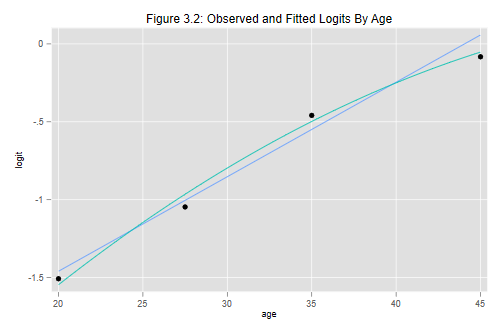

These ideas extend easily to more than two groups. We will illustrate using the data on contraceptive use by age, where we compare four groups.
These are the data on page 18 of the notes, entered as four age groups
. clear
. input ageg users n
ageg users n
1. 1 72 397
2. 2 105 404
3. 3 237 612
4. 4 93 194
5. end
. label define ageg 1 "<25" 2 "25-29" 3 "30-39" 4 "40-49"
. label values ageg ageg
We will also need dummy variables to represent the age groups.
We could generate these using tab(ageg), gen(age),
but we will calculate them explicity to use more descriptive names.
We could also use factor variables, and will illustrate that
approach below.
. gen age2529 = ageg == 2 . gen age30s = ageg == 3 . gen age40s = ageg == 4
Here is the model treating age as a factor with four levels, which is of course saturated for the data:
. blogit users n age2529 age30s age40s
Logistic regression for grouped data Number of obs = 1607
LR chi2(3) = 79.19
Prob > chi2 = 0.0000
Log likelihood = -962.25091 Pseudo R2 = 0.0395
------------------------------------------------------------------------------
_outcome | Coef. Std. Err. z P>|z| [95% Conf. Interval]
-------------+----------------------------------------------------------------
age2529 | .4606758 .1727255 2.67 0.008 .1221401 .7992116
age30s | 1.048293 .1544406 6.79 0.000 .7455952 1.350991
age40s | 1.424638 .1939574 7.35 0.000 1.044488 1.804788
_cons | -1.507159 .1302529 -11.57 0.000 -1.76245 -1.251868
------------------------------------------------------------------------------
Compare the parameter estimates with those on Table 3.5 of the notes.
Can you obtain these estimates by hand directly from the raw frequencies?
We see that the odds of using contraception increase steadily from
one age group to the next. You could type blogit, or
to convert from logit coefficients to odds ratios.
The chi2 statistic reported by Stata is the likelihood ratio
chi-squared comparing the model at hand with the null model. The value of
79.19 on 3 d.f. means that we can reject the hypothesis that the probability
of using contraception is the same in the four age groups.
Stata's test command makes calculation of Wald tests easy.
Here's the test for the age effect on page 20 of the notes:
. test age2529 age30s age40s
( 1) [_outcome]age2529 = 0
( 2) [_outcome]age30s = 0
( 3) [_outcome]age40s = 0
chi2( 3) = 74.36
Prob > chi2 = 0.0000
Once again the likelihood ratio and Wald test are similar but not identical.
We will save the results for later use. Stata can store the estimates
in memory using estimates store name or,
save them to disk using estimates save filename.
We'll just save them in memory as ageg
. estimates store ageg
Finally, we will compute the fitted logits, which we will need later.
We can do this using the predict command, with the
xb option to make predictions in the scale of the linear
predictor, which in this case is the logit scale. (The default is to
predict in the scale of the response, in this case counts.)
We will name the prediction obslogit because
it corresponds to the logits of the observed proportions
. predict obslogit, xb
Before we leave this dataset, let us verify that we can obtain
exactly the same results using Stata's factor variables,
All we need is the i.prefix to request indicators of
age groups:
. blogit users n i.ageg
Logistic regression for grouped data Number of obs = 1607
LR chi2(3) = 79.19
Prob > chi2 = 0.0000
Log likelihood = -962.25091 Pseudo R2 = 0.0395
------------------------------------------------------------------------------
_outcome | Coef. Std. Err. z P>|z| [95% Conf. Interval]
-------------+----------------------------------------------------------------
ageg |
25-29 | .4606758 .1727255 2.67 0.008 .1221401 .7992116
30-39 | 1.048293 .1544406 6.79 0.000 .7455952 1.350991
40-49 | 1.424638 .1939574 7.35 0.000 1.044488 1.804788
|
_cons | -1.507159 .1302529 -11.57 0.000 -1.76245 -1.251868
------------------------------------------------------------------------------
With Stata 11 or 12 we lose the labelling of the age groups,
but don't have to worry about creating dummies.
With Stata 13 we get the best of both worlds.
Recall that we can get the Wald test using testparm:
. testparm i.ageg
( 1) [_outcome]2.ageg = 0
( 2) [_outcome]3.ageg = 0
( 3) [_outcome]4.ageg = 0
chi2( 3) = 74.36
Prob > chi2 = 0.0000
We get exactly the same result as before.
We will now treat age as a covariate, using the mid-points of the
four age groups; so we treat the group 15-24 as 20, 25-29 as 27.5,
30-39 as 35 and 40-49 as 45. (If these don't look like mid-points
to you, note that age is usually reported in completed years,
so 15-24 means between 15.0 and 25.0, and the mid-point is 20.0.)
The easiest way to code the midpoints in this example is via the
recode command
. recode ageg 1=20 2=27.5 3=35 4=45, gen(agem) (4 differences between ageg and agem)
We can now fit the model on page 20 of the notes, which has a linear effect of age:
. blogit users n agem
Logistic regression for grouped data Number of obs = 1607
LR chi2(1) = 76.79
Prob > chi2 = 0.0000
Log likelihood = -963.45258 Pseudo R2 = 0.0383
------------------------------------------------------------------------------
_outcome | Coef. Std. Err. z P>|z| [95% Conf. Interval]
-------------+----------------------------------------------------------------
agem | .060671 .0071034 8.54 0.000 .0467486 .0745934
_cons | -2.672667 .2332492 -11.46 0.000 -3.129827 -2.215507
------------------------------------------------------------------------------
We see that older women are more likely to use contraception, and that the odds of using contraception are about six percent higher for every year of age. (This comes from exponentiating the coefficient of age, which is now measured in years.)
We can formally test the assumption of linearity using a likelihood
ratio test to compare this model with the saturated model of the
previous section.
The test can be calculated using Stata's lrtest command,
which uses a dot to refer to the current model
. lrtest . ageg Likelihood-ratio test LR chi2(2) = 2.40 (Assumption: . nested in ageg) Prob > chi2 = 0.3007
The statistic of 2.4 on one d.f. is not significant, indicating that
we have no evidence against the assumption of linearity, and can
happily save two degrees of freedom. This statistic is, of course,
the deviance for the model with a linear effect of age, which we
can compute using glm
. quietly glm users agem, family(binomial n) . display e(deviance) 2.4033519
We can also calculate this "by hand" from first principles using the 'sum of observed times log(observed/expected)' formula . Just remember that you need to use observed and expected counts of both successes and failures, here users and non-users:
. predict pusers // predicted count of users (option mu assumed; predicted mean users) . gen di = 2*( users*log(users/pusers) + (n-users)*log((n-users)/(n-pusers)) ) . gen DI = sum(di) . display "Deviance = " DI[_N] Deviance = 2.4033537
The next step will be to compute fitted logits based on this model, and use them together with the observed logits calculated earlier to examine visually the adequacy of the linear specification, effectively reproducing Figure 3.2 in the notes. For added measure I will also consider a model with a quadratic term, centering age around 30 before squaring it, so the linear term reflects the slope at 30.
. predict lfit1, xb
. gen agemcsq = (agem-30)^2
. blogit users n agem agemcsq
Logistic regression for grouped data Number of obs = 1607
LR chi2(2) = 78.32
Prob > chi2 = 0.0000
Log likelihood = -962.68877 Pseudo R2 = 0.0391
------------------------------------------------------------------------------
_outcome | Coef. Std. Err. z P>|z| [95% Conf. Interval]
-------------+----------------------------------------------------------------
agem | .0648033 .0079525 8.15 0.000 .0492167 .08039
agemcsq | -.0010131 .0008214 -1.23 0.217 -.002623 .0005968
_cons | -2.740736 .2434262 -11.26 0.000 -3.217842 -2.263629
------------------------------------------------------------------------------
. predict lfit2, xb
. graph twoway (scatter obslogit agem) (line lfit1 agem) ///
> (function f=_b[_cons]+_b[agem]*x+_b[agemcsq]*(x-30)^2, ///
> range(20 45)) ///
> , title("Figure 3.2: Observed and Fitted Logits By Age") ///
> xtitle("age") ytitle("logit") legend(off)
. graph export fig32.png, width(500) replace
(file fig32.png written in PNG format)

The graph shows that the linear specification was adequate. There is a hint that a quadratic model might be better, particularly in terms of the fit for the oldest age group, but the quadratic term is not significant.
(You may wonder why I used the function plot type for the quadratic model. I could have predicted and plotted the logits just like I did for the linear model, but with only four points joined by straight lines we lose the curvilinearity. This also helps illustrate how to use estimation results in a plot.)
This analysis gives us a quick indication of whether we could treat age linearly if we were working with individual data and had the actual ages of the 1607 women. It is not equivalent, however, because we have grouped age, and therefore treated all women men aged 25-29 as if they were age 27.5. With individual data some would be 25, some 26, etc.
You may also wonder why we were able to do a likelihood ratio test, when a model treating age linearly is usually not nested in a model that treats it as a factor. The answer is that in this case both specifications are applied to grouped data. You can view the linear model as imposing constraints where the differences betwen the age groups are proportional to the difference in years between their midpoints. Alternatively, you can view the model that treats age as four groups as equivalent to having linear, quadratic, and cubic terms.